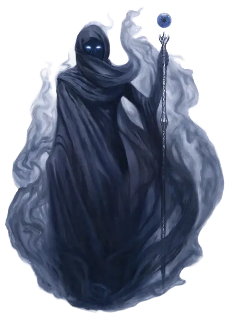

Сул Катеш
Sul Khatesh
Большое Исчадие, законно-злое, именной НИП

Класс Доспеха 22 (природный доспех)
Хиты 475 (50к10 + 200)
Скорость 40 футов, летая 40 футов (парит)
| мод | спас | ||
|---|---|---|---|
| СИЛ | 18 | +4 | +4 |
| ЛОВ | 21 | +5 | +5 |
| ТЕЛ | 19 | +4 | +12 |
| мод | спас | ||
|---|---|---|---|
| ИНТ | 30 | +10 | +18 |
| МДР | 22 | +6 | +14 |
| ХАР | 25 | +7 | +15 |
Навыки История +18, Магия +18, Проницательность +14, Религия +18
Сопротивление урону огонь, холод, электричество
Иммунитет к урону яд; дробящий, колющий, рубящий от немагических атак
Иммунитет к состояниям окаменение, отравление, паралич, очарование, испуг, истощение
Чувства истинное зрение 120 футов, пассивное Восприятие 16
Языки Все, Телепатия 150 фт.
Опасность 28 (120000 опыта)
Бонус мастерства +8
Особенности
Врожденное колдовство. Базовой характеристикой Сул Катеш является Интеллект (Сл спасброска от заклинания 26, +18 к попаданию атаками заклинаниями). Она может накладывать следующие заклинания, не нуждаясь в материальных компонентах:
• Неограниченно: контрзаклинание [counterspell], обнаружение магии [detect magic], рассеивание магии [dispel magic], огненный шар [fireball], щит [shield], разящее око [eyebite], молния [lightning bolt]
• 3/день каждое: пляшущая молния [chain lightning], сотворение нежити [create undead], вещий сон [dream], удержание чудовища [hold monster], множественное внушение [mass suggestion], наблюдение [scrying]
• 1/день каждое: предвидение [foresight], врата [gate], слово силы: смерть [power word kill], телепортация [teleport]
Легендарное сопротивление (3/день). Если Сул Катеш проваливает спасбросок, она может вместо этого сделать спасбросок успешным.
Сопротивление магии. Сул Катеш совершает с преимуществом спасброски от заклинаний и прочих магических эффектов.
Мастер магии. Сул Катеш совершает с преимуществом спасброски Телосложения для поддержания концентрации.
Действия
Мультиатака. Сул Катеш совершает 4 атаки своей магической вспышкой.
Магическая вспышка. Дальнобойная атака заклинанием: + 18 к попаданию, дистанция 120 футов, одна цель. Попадание: 15 (1к10+10) урона силовым полем.
Магический посох. Рукопашная атака оружием: +12 к попаданию, досягаемость 5 футов, одна цель. Попадание: 36 (5к12+4) урона силовым полем.
Магический катаклизм (восстанавливается после продолжительного отдыха). Сул Катеш призывает сферы магической энергии, которые падают на землю в трех разных точках, которые она может видеть в пределах 1 мили от неё. Каждое существо в сфере радиусом 40 футов должно преуспеть в спасброске Ловкости Сл 26, получая 71 (11к12) урона силовым полем в случае провала или половину этого урона в случае успеха. Существо, находящееся в зоне более, чем одного взрыва, получает урон только от одного. После чего область каждого магического взрыва на 1 час становится преградой магии [antimagic field] . Заклинания Сул Катеш не блокируются этой преградой.
Изменение формы. Сул Катеш волшебным образом может трансформироваться в гуманоида, зверя или великана, чей показатель опасности ниже, чем у неё самой, или возвращается в свою истинную форму. Она так же возвращается в истинную форму если умирает. Любое снаряжение, которое она несёт или носит, поглощается или переносится на её новую форму (по её выбору).
В новой форме Сул Катеш сохраняет свое мировоззрение, хиты, кости хитов, способность говорить, навыки, легендарное сопротивление, а также значения Интеллекта, Мудрости, Харизмы и свои действия. Её характеристики и особенности заменяются характеристиками и особенностями новой формы, за исключением каких-либо классовых умений или легендарных действий этой формы.
Легендарные действия
Сул Катеш может использовать 3 легендарных действия. Одновременно может использоваться только одно действие и только в конце хода другого существа. Сул Катеш восстанавливает свои действия в начале каждого своего хода.
Атака. Сул Катеш совершает две атаки своей магической вспышкой или одну атаку посохом.
Поглощение магии (стоит 2 действия). Сул Катеш выбирает одно существо в пределах 120 футов от нее, которое концентрируется на заклинании. Цель должна преуспеть в спасброске Телосложения Сл 26, иначе его концентрация на заклинании прерывается, а Сул Катеш получает 5 временных хитов за каждый уровень этого заклинания.
Безумные секреты (стоит 3 действия). Сул Катеш шепчет магический секрет в разум одного существа, видимого ею в пределах 60 футов. Цель должна преуспеть в спасброске Мудрости 26 или израсходовать одну из своих ячеек заклинаний 3-го уровня или ниже и нанести 26 (4к12) урона силовым полем существу в пределах 30 футов от себя. Существо которое проваливает спасбросок, но не может израсходовать ячейку заклинаний становится ошеломлённым до конца своего следующего хода.
Описание
Сул Катеш известна как Хранительница Тайн и Королева Теней. Она воплощает страхи и суеверия, окружающие магию, начиная от злобных колдунов до безумных волшебников; от смертельных проклятий до магической силы, которая затягивает тех, кто владеет ею - все глубже во тьму.
Сул Катеш коварнее, чем Ярость Войны. Она наделяет колдунов силой и нашептывает секреты в умы волшебников и изобретателей, помогая им овладевать заклинаниями и создавать реликвии, которые они никогда не смогли бы создать самостоятельно. Однако лишь некоторые из тех, кто вдохновлен Сул Катеш, понимают, с какими силами они имеют дело, или осознает опасность, присущую ее дарам.
Королева теней. Как порождение Тени, Сул Катеш может принимать любую форму. Ее любимая форма - двенадцатифутовая гуманоидная фигура, облаченная в ниспадающую мантию с капюшоном, сотканную из клубящегося тумана и облегающей тени.
Приспешники. Большинство приспешников Сул Катеш волшебники и колдуны. Она является одним из главных покровителей колдунов в Кхорвайре. Ковены, посвященные Королеве Теней, используют темную магию и страх, чтобы доминировать над целыми сообществами, в то время как единичные колдуны заключают пакты с Сул Катеш, одержимые властью и местью. Разделяя таким образом свою власть, повелительница увековечивает образ злого колдуна, вызывая страх, который делает Хранительницу Тайн еще сильнее.
Главным агентом Сул Катеш среди Повелителей Пыли является ракшас Гектула, который служит библиотекарем в демонической цитадели Аштакала. Известный как Первый Писарь, Гектула руководит огромной сокровищницей тайных знаний и артефактов.
Бессмертная природа. Повелителям не нужны воздух, еда, вода или сон. Они также не могут умереть навсегда. После своей смерти они восстанавливают в другом месте Мультивселенной и снова возвращаются к жизни в обозначенное Мастером время.
В первые дни существования мира дети Хайбер восстали из тьмы, чтобы править Эберроном. Величайшими из них были Владыки, которые властвовали над миром страха, войны и смерти, пока дети Эберрон и Сибериса не восстали против них.
Армии драконов сражались против демонов Хайбер. И хотя Повелителей нельзя было уничтожить, коатли пожертвовали своими жизнями, чтобы построить тюрьму небесного света: Серебряное Пламя, которое снова заточило повелителей в Хайбере. Узники содержались в заточении бесчисленные поколения, однако Владыки все еще жаждут вырваться на свободу и вернуть себе мир наверху.
Пока Владыки находятся в заточении у Серебряного Пламени, они не могут физически проявиться в мире. Но каждый Повелитель воплощает в себе определенный аспект зла, который растет в силе, поскольку их слуги - демоны, известные как Повелители Пыли, - замышляют освободить своих древних хозяев. Владыки обретают силу, когда смертные выбирают темные тропы, проложенные для них. И по мере того, как Повелители становятся сильнее, они приобретают все большее влияние.
Около тридцати повелителей заключены в Хайбере. Здесь описаны двое: Рак Тулкеш и Сул Катеш, которые остаются в заключении и не могут принять физическую форму. В следующих разделах будет представлена информация, которая отражает силы, которыми будут обладать эти Владыки, если когда-либо будут освобождены.